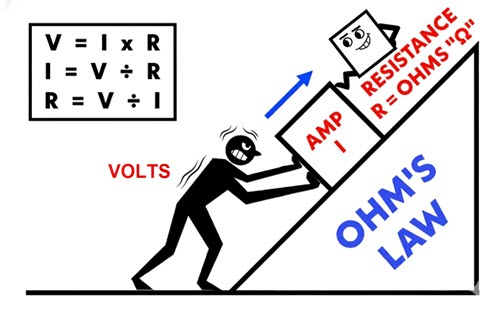

Voltage is the electrical pressure that pushes electric current through a conductor. It's measured in volts (V) and can be thought of as the "force" behind electricity.
Key Points:
- Standard household voltage in the US is 120 volts for most outlets
- Large appliances (dryers, ovens, AC units) use 240 volts
- Voltage is like water pressure in a pipe - higher voltage means more potential to do work
- The symbol for voltage is "V" or "E" in electrical formulas
Real-World Example:
Think of voltage like the height of a waterfall. The higher the waterfall (voltage), the more potential energy the water (electricity) has to do work when it falls.
Ohm's Law:
V = I × R
Where V = Voltage, I = Current (Amps), R = Resistance
